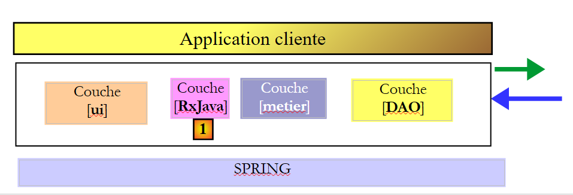
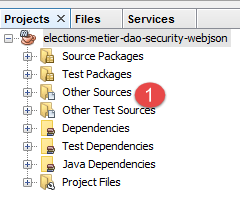
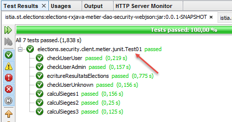
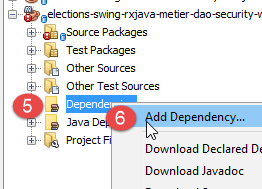

20. Programación asíncrona con RxJava
Lectura recomendada: [Introducción a RxJava. Aplicación a entornos Swing y Android.]
En este capítulo, volvemos al capítulo 17.6, donde creamos una aplicación cliente/servidor con la siguiente arquitectura:
 |
Ciertas acciones del usuario en la interfaz Swing de [1] desencadenan acciones que llegan hasta la base de datos de [3] a través de una red HTTP [2]. Debido a esto, la respuesta a la acción del usuario puede tardar más o menos tiempo en llegar. Sería útil incluir un indicador de carga en la interfaz de usuario con una opción para cancelar la operación iniciada si tarda demasiado. En el capítulo 17.6, todas las acciones del usuario que requieren intercambio de datos con el servidor son sincrónicas. El controlador de eventos ejecutado por el código no se completa hasta que se recibe la respuesta. Durante este tiempo, la interfaz gráfica se congela: no responde a nuevas acciones del usuario. Estas simplemente se ponen en cola para ser procesadas una vez que haya finalizado el controlador de eventos que se está ejecutando. Por lo tanto, si se mostrara un botón de cancelación, el usuario podría hacer clic en él, pero no pasaría nada hasta que la operación actual hubiera finalizado. El botón de cancelación no serviría entonces para nada.
Para que el clic en el botón de cancelar surta efecto, la operación actual debe completarse. Para lograrlo, debe iniciar la operación, que puede ser de larga duración, de forma asíncrona:
- el controlador de eventos inicia la operación de larga duración, pero no espera a su resultado y devuelve el control al hilo de la interfaz de usuario que gestiona los eventos de la interfaz gráfica. La operación de larga duración se inicia en un hilo distinto del hilo de la interfaz de usuario, lo que evita que este último quede bloqueado;
- Si el usuario hace clic en el botón de cancelar antes de que finalice la operación de larga duración, el hilo de la interfaz de usuario inactivo puede gestionar este evento. La operación de larga duración puede entonces abandonarse ignorando su resultado;
- Si la operación de larga duración no se ha cancelado, la llegada de la respuesta desencadenará un evento en el hilo de la interfaz de usuario. Si el hilo de la interfaz de usuario está inactivo, ejecutará el código asociado a este evento, que procesará la respuesta;
La interfaz de usuario funcionará como antes. Si los tiempos de respuesta del servidor son rápidos, el usuario no notará ninguna diferencia. Si son perceptibles, el usuario verá aparecer un botón de cancelación y tendrá la opción de interrumpir la operación actual.
La biblioteca [Rx] permite la programación asíncrona. Su principal ventaja radica en que se ha portado a numerosos entornos (Java, .NET, JS, etc.) y que los conocimientos adquiridos en un entorno se pueden transferir fácilmente a otro. Aquí nos remitiremos al capítulo 2 del documento [Introducción a RxJava. Aplicación a entornos Swing y Android]. Se recomienda al lector que lo lea. En las siguientes secciones, utilizaremos código de los ejemplos de este capítulo.
Desarrollaremos la arquitectura de la aplicación de la siguiente manera:
 |
- En [1], insertamos una capa [RxJava] entre la capa [Swing] y la capa [lógica de negocio]. Los métodos de esta última se llamarán ahora de forma asíncrona;
Procederemos en varios pasos:
- Paso 1: La capa [lógica de negocio, DAO] presenta actualmente una interfaz síncrona hacia la capa [UI]. La transformaremos en una capa asíncrona [RxJava, lógica de negocio, DAO];
- Paso 2: Convertiremos la aplicación de consola síncrona en una aplicación que siga siendo síncrona, pero que utilice la interfaz asíncrona [RxJava, negocio, DAO];
- Paso 3: Convertiremos la aplicación Swing síncrona en una aplicación Swing asíncrona;
20.1. Paso 1
Estamos convirtiendo la capa síncrona actual [lógica de negocio, DAO] en una capa asíncrona [RxJava, lógica de negocio, DAO].
20.1.1. Creación
Comenzamos con el proyecto Maven del capítulo 17.4, que abrimos en NetBeans:
 |  |
Duplicamos este proyecto [1] (copiar/pegar) en un nuevo proyecto [elections-rxjava-business-dao-security-webjson] [2].
20.1.2. Configuración de Maven
Actualizamos el archivo [pom.xml] del nuevo proyecto para añadir la dependencia de la biblioteca [RxJava]:
<project xmlns="http://maven.apache.org/POM/4.0.0" xmlns:xsi="http://www.w3.org/2001/XMLSchema-instance"
xsi:schemaLocation="http://maven.apache.org/POM/4.0.0 http://maven.apache.org/xsd/maven-4.0.0.xsd">
<modelVersion>4.0.0</modelVersion>
<groupId>istia.st.elections</groupId>
<artifactId>elections-metier-dao-security-rxjava-webjson</artifactId>
<version>0.0.1-SNAPSHOT</version>
<description>Client jUnit du serveur web / jSON</description>
<name>elections-metier-dao-security-rxjava-webjson</name>
<properties>
<project.build.sourceEncoding>UTF-8</project.build.sourceEncoding>
<java.version>1.8</java.version>
</properties>
<parent>
<groupId>org.springframework.boot</groupId>
<artifactId>spring-boot-starter-parent</artifactId>
<version>1.2.7.RELEASE</version>
</parent>
<dependencies>
<!-- Spring -->
<dependency>
<groupId>org.springframework</groupId>
<artifactId>spring-web</artifactId>
</dependency>
<!-- jSON library used by Spring -->
<dependency>
<groupId>com.fasterxml.jackson.core</groupId>
<artifactId>jackson-core</artifactId>
</dependency>
<dependency>
<groupId>com.fasterxml.jackson.core</groupId>
<artifactId>jackson-databind</artifactId>
</dependency>
<!-- component used by Spring RestTemplate -->
<dependency>
<groupId>org.apache.httpcomponents</groupId>
<artifactId>httpclient</artifactId>
</dependency>
<!-- Google Guava -->
<dependency>
<groupId>com.google.guava</groupId>
<artifactId>guava</artifactId>
<version>16.0.1</version>
<scope>test</scope>
</dependency>
<!-- log library -->
<dependency>
<groupId>org.springframework.boot</groupId>
<artifactId>spring-boot-starter-logging</artifactId>
</dependency>
<!-- Spring Boot Test -->
<dependency>
<groupId>org.springframework.boot</groupId>
<artifactId>spring-boot-starter-test</artifactId>
<scope>test</scope>
</dependency>
<!-- Spring Boot -->
<dependency>
<groupId>org.springframework.boot</groupId>
<artifactId>spring-boot</artifactId>
<scope>test</scope>
</dependency>
<!-- https://mvnrepository.com/artifact/io.reactivex/rxjava -->
<dependency>
<groupId>io.reactivex</groupId>
<artifactId>rxjava</artifactId>
<version>1.2.0</version>
</dependency>
</dependencies>
<build>
<plugins>
<plugin>
<groupId>org.apache.maven.plugins</groupId>
<artifactId>maven-surefire-plugin</artifactId>
<version>2.18.1</version>
</plugin>
</plugins>
</build>
</project>
- líneas 65–70: hemos añadido la dependencia de la biblioteca RxJava;
20.1.3. Implementación asíncrona de la capa [de negocio]
 |
Para implementar la capa [RxJava, negocio], añadimos al proyecto una interfaz asíncrona [IRxElectionsMetier] [1] y su implementación [RxElectionsMetier] [2]:
 |
La interfaz [IRxElectionsMetier] es la interfaz asíncrona para la capa [RxJava, negocio]. Su código es el siguiente:
package elections.security.client.metier;
import elections.security.client.entities.ListeElectorale;
import elections.security.client.entities.User;
import rx.Observable;
public interface IRxElectionsMetier {
// authentication
Observable<Void> authenticate(User user);
// get the lists in competition
Observable<ListeElectorale[]> getListesElectorales(User user);
// the number of seats to be filled
Observable<Integer> getNbSiegesAPourvoir(User user);
// the electoral threshold
Observable<Double> getSeuilElectoral(User user);
// recording results
Observable<Void> recordResultats(User user, ListeElectorale[] listesElectorales);
// calculating seats
Observable<ListeElectorale[]> calculerSieges(User user, ListeElectorale[] listesElectorales);
}
La interfaz [IRxElectionsMetier] hereda los métodos de la interfaz [IElectionsMetier], pero mientras que un método M de la interfaz [IElectionsMetier] devolvía un resultado de tipo T, el método M de la interfaz [IRxElectionsMetier] devuelve un resultado de tipo Observable<T>. El tipo [Observable] lo proporciona la biblioteca RxJava. Un tipo Observable<T> proporciona el método [subscribe], que recupera el tipo T de forma asíncrona. Hay tres eventos asociados a este método:
- onSuccess(T result), que notifica que hay un resultado de tipo T disponible. La operación asíncrona puede devolver varios resultados;
- onError(Throwable th), que notifica que la operación asíncrona ha encontrado un error;
- onCompleted(), que notifica que la operación asíncrona ha finalizado;
Hasta que no se llame al método [Observable.subscribe], no se inicia la operación asíncrona asociada al observable. El código que llama a un método M de la interfaz [IRxElectionsMetier] no obtiene el resultado esperado T, sino un tipo Observable<T> que le permitirá posteriormente obtener el resultado T llamando al método [Observable.subscribe].
La implementación [RxElectionsMetier] de la interfaz [IRxElectionsMetier] es la siguiente:
package elections.security.client.metier;
import elections.security.client.entities.ListeElectorale;
import elections.security.client.entities.User;
import org.springframework.beans.factory.annotation.Autowired;
import org.springframework.stereotype.Component;
import rx.Observable;
@Component
public class RxElectionsMetier implements IRxElectionsMetier {
@Autowired
private IElectionsMetier metier;
@Override
public Observable<Void> authenticate(User user) {
...
}
@Override
public Observable<ListeElectorale[]> getListesElectorales(User user) {
return Observable.create(subscriber -> {
try {
// call synchronous method then reply to subscriber
subscriber.onNext(metier.getListesElectorales(user));
// we signal the end of the observable
subscriber.onCompleted();
} catch (Exception e) {
// we forward the exception
subscriber.onError(e);
}
});
}
@Override
public Observable<Integer> getNbSiegesAPourvoir(User user) {
...
}
@Override
public Observable<Double> getSeuilElectoral(User user) {
...
}
@Override
public Observable<Void> recordResultats(User user, ListeElectorale[] listesElectorales) {
...
}
@Override
public Observable<ListeElectorale[]> calculerSieges(User user, ListeElectorale[] listesElectorales) {
...
}
}
- líneas 12-13: inyección Spring de la capa de negocio síncrona;
- líneas 20-34: comentaremos el método [getVoterLists], que en lugar de devolver un tipo [VoterList[]] devuelve un tipo [Observable<VoterList[]>];
- líneas 22-32: el método estático [Observable.create] permite crear un Observable a partir de un tipo [Subscriber]. El tipo [Subscriber] representa un suscriptor de los flujos de resultados producidos por el proceso observado (el Observable). Proporciona tres métodos:
- [Subscriber.onNext] (línea 25) para recibir un resultado del proceso observado;
- [Subscriber.onError] (línea 30) para recibir una excepción del proceso observado. Tras una excepción, el tipo [Observable] deja de emitir resultados;
- [Subscriber.onCompleted] (línea 27) para recibir la señal de fin de emisión del proceso observado. Aquí, el proceso observado emite solo un elemento. Tenga en cuenta que esta señal no se emite si se produce una excepción. Este es el comportamiento predeterminado de los Observables: la emisión de una excepción también señala el fin de las emisiones. Los suscriptores son conscientes de esto;
- líneas 22–34: el método [Observable.create] toma un tipo [Observable.OnSubscribe] como parámetro. Este tipo es una interfaz funcional. Este concepto se introdujo con Java 8 y se refiere a una interfaz con un único método. Aquí, el único método de la interfaz [Observable.OnSubscribe] es el siguiente:
Para implementar una interfaz funcional de un solo método m(param1, param2, ..., paramn), puedes utilizar la siguiente sintaxis simplificada:
Esto es lo que se hace en las líneas 22–34:
- [subscriber] es el parámetro del método [Observable.OnSubscribe.call];
- líneas 23–32: el código que queremos proporcionar al método [call];
- línea 25: solicitamos las listas de votantes de forma sincrónica desde la capa [business] inyectada en la línea 13. Por lo tanto, tendremos que esperar el resultado. Cuando se recibe, se pasa al método [onNext] del suscriptor;
- línea 28: en caso de error, la excepción se pasa al método [onError] del suscriptor;
- línea 31: Esperamos un único resultado. Una vez obtenido (ya sean las listas de votantes o una excepción), notificamos al suscriptor que el proceso observado ha terminado de emitir resultados;
Es importante recordar que el método [RxElectionsMetier] devuelve un tipo Observable<VoterList[]> y no el tipo VoterList[] en sí. El código de llamada debe invocar el método Observable<VoterList[]>.subscribe para que se ejecute el código de las líneas 23-33 y devuelva las listas de votantes a través de la línea 25.
El código de los demás métodos es similar:
package elections.security.client.metier;
import elections.security.client.entities.ListeElectorale;
import elections.security.client.entities.User;
import org.springframework.beans.factory.annotation.Autowired;
import org.springframework.stereotype.Component;
import rx.Observable;
@Component
public class RxElectionsMetier implements IRxElectionsMetier {
@Autowired
private IElectionsMetier metier;
@Override
public Observable<Void> authenticate(User user) {
return Observable.create(subscriber -> {
try {
// synchronous method call
metier.authenticate(user);
// we signal the end of the observable
subscriber.onCompleted();
} catch (Exception e) {
// we forward the exception
subscriber.onError(e);
}
});
}
@Override
public Observable<ListeElectorale[]> getListesElectorales(User user) {
return Observable.create(subscriber -> {
try {
// call synchronous method then reply to subscriber
subscriber.onNext(metier.getListesElectorales(user));
// we signal the end of the observable
subscriber.onCompleted();
} catch (Exception e) {
// we forward the exception
subscriber.onError(e);
}
});
}
@Override
public Observable<Integer> getNbSiegesAPourvoir(User user) {
return Observable.create(subscriber -> {
try {
// call synchronous method then reply to subscriber
subscriber.onNext(metier.getNbSiegesAPourvoir(user));
// we signal the end of the observable
subscriber.onCompleted();
} catch (Exception e) {
// we forward the exception
subscriber.onError(e);
}
});
}
@Override
public Observable<Double> getSeuilElectoral(User user) {
return Observable.create(subscriber -> {
try {
// call synchronous method then reply to subscriber
subscriber.onNext(metier.getSeuilElectoral(user));
// we signal the end of the observable
subscriber.onCompleted();
} catch (Exception e) {
// we forward the exception
subscriber.onError(e);
}
});
}
@Override
public Observable<Void> recordResultats(User user, ListeElectorale[] listesElectorales) {
return Observable.create(subscriber -> {
try {
// synchronous method call
metier.recordResultats(user, listesElectorales);
// we signal the end of the observable
subscriber.onCompleted();
} catch (Exception e) {
// we forward the exception
subscriber.onError(e);
}
});
}
@Override
public Observable<ListeElectorale[]> calculerSieges(User user, ListeElectorale[] listesElectorales) {
return Observable.create(subscriber -> {
try {
// call synchronous method then reply to subscriber
subscriber.onNext(metier.calculerSieges(user, listesElectorales));
// we signal the end of the observable
subscriber.onCompleted();
} catch (Exception e) {
// we forward the exception
subscriber.onError(e);
}
});
}
}
- líneas 20 y 81: el método [onNext] del suscriptor no se invoca porque el suscriptor no espera ningún resultado;
20.1.4. Pruebas JUnit para la capa [business]
 |
20.1.4.1. Prueba01
Volvemos a examinar la prueba unitaria [Test01] tratada en la sección 17.4.4. Se diseñó para realizar llamadas sincrónicas a la interfaz [IElectionsMetier]. La modificamos para que realice llamadas sincrónicas a la nueva interfaz [IRxElectionsMetier]. De hecho, es posible realizar llamadas sincrónicas a una interfaz asíncrona de RxJava. El código queda así:
package elections.security.client.metier.junit;
import org.junit.Assert;
import org.junit.BeforeClass;
import org.junit.Test;
import org.junit.runner.RunWith;
import org.springframework.beans.factory.annotation.Autowired;
import org.springframework.boot.test.SpringApplicationConfiguration;
import org.springframework.test.context.junit4.SpringJUnit4ClassRunner;
import com.fasterxml.jackson.core.JsonProcessingException;
import com.fasterxml.jackson.databind.ObjectMapper;
import elections.security.client.config.MetierConfig;
import elections.security.client.entities.ElectionsException;
import elections.security.client.entities.ListeElectorale;
import elections.security.client.entities.User;
import elections.security.client.metier.IRxElectionsMetier;
import rx.observables.BlockingObservable;
@SpringApplicationConfiguration(classes = MetierConfig.class)
@RunWith(SpringJUnit4ClassRunner.class)
public class Test01 {
// layer [electionsMetier]
@Autowired
private IRxElectionsMetier electionsMetier;
// mapper jSON
private final ObjectMapper mapper = new ObjectMapper();
// users
static private User admin;
static private User user;
static private User unknown;
@BeforeClass
public static void initTest() {
admin = new User("admin", "admin");
user = new User("user", "user");
unknown = new User("x", "y");
}
@Test()
public void checkUserUser() {
ElectionsException se = null;
try {
BlockingObservable.from(electionsMetier.authenticate(user)).firstOrDefault(null);
} catch (ElectionsException e) {
se = e;
}
Assert.assertNotNull(se);
Assert.assertEquals("403 Forbidden", se.getErreurs().get(0));
}
@Test()
public void checkUserUnknown() {
ElectionsException se = null;
try {
BlockingObservable.from(electionsMetier.authenticate(unknown)).firstOrDefault(null);
} catch (ElectionsException e) {
se = e;
}
Assert.assertNotNull(se);
Assert.assertEquals("401 Unauthorized", se.getErreurs().get(0));
}
@Test()
public void checkUserAdmin() {
ElectionsException se = null;
try {
BlockingObservable.from(electionsMetier.authenticate(admin)).firstOrDefault(null);
} catch (ElectionsException e) {
se = e;
}
Assert.assertNull(se);
}
/**
* vérification 1 : méthode de calcul des sièges on fixe en dur les listes
*/
@Test
public void calculSieges1() {
// create the table of 7 candidate lists
ListeElectorale[] listes = new ListeElectorale[7];
listes[0] = new ListeElectorale("A", 32000, 0, false);
listes[1] = new ListeElectorale("B", 25000, 0, false);
listes[2] = new ListeElectorale("C", 16000, 0, false);
listes[3] = new ListeElectorale("D", 12000, 0, false);
listes[4] = new ListeElectorale("E", 8000, 0, false);
listes[5] = new ListeElectorale("F", 4500, 0, false);
listes[6] = new ListeElectorale("G", 2500, 0, false);
// the seats for each list are calculated
listes = BlockingObservable.from(electionsMetier.calculerSieges(admin, listes)).first();
// check results
Assert.assertEquals(2, listes[0].getSieges());
Assert.assertFalse(listes[0].isElimine());
Assert.assertEquals(2, listes[1].getSieges());
Assert.assertFalse(listes[1].isElimine());
Assert.assertEquals(1, listes[2].getSieges());
Assert.assertFalse(listes[2].isElimine());
Assert.assertEquals(1, listes[3].getSieges());
Assert.assertFalse(listes[3].isElimine());
Assert.assertEquals(0, listes[4].getSieges());
Assert.assertFalse(listes[4].isElimine());
Assert.assertEquals(0, listes[5].getSieges());
Assert.assertTrue(listes[5].isElimine());
Assert.assertEquals(0, listes[6].getSieges());
Assert.assertTrue(listes[6].isElimine());
}
/**
* vérification 2 : méthode de calcul des sièges on demande les listes à la couche [metier] puis on fixe en dur les
* voix
*/
@Test
public void calculSieges2() {
// create the table of 7 candidate lists
ListeElectorale[] listes = BlockingObservable.from(electionsMetier.getListesElectorales(admin)).first();
// the voices are hard-fixed
listes[0].setVoix(32000);
listes[1].setVoix(25000);
listes[2].setVoix(16000);
listes[3].setVoix(12000);
listes[4].setVoix(8000);
listes[5].setVoix(4500);
listes[6].setVoix(2500);
// the seats obtained by each list are calculated
listes = BlockingObservable.from(electionsMetier.calculerSieges(admin, listes)).first();
// check results
Assert.assertEquals(2, listes[0].getSieges());
Assert.assertFalse(listes[0].isElimine());
Assert.assertEquals(2, listes[1].getSieges());
Assert.assertFalse(listes[1].isElimine());
Assert.assertEquals(1, listes[2].getSieges());
Assert.assertFalse(listes[2].isElimine());
Assert.assertEquals(1, listes[3].getSieges());
Assert.assertFalse(listes[3].isElimine());
Assert.assertEquals(0, listes[4].getSieges());
Assert.assertFalse(listes[4].isElimine());
Assert.assertEquals(0, listes[5].getSieges());
Assert.assertTrue(listes[5].isElimine());
Assert.assertEquals(0, listes[6].getSieges());
Assert.assertTrue(listes[6].isElimine());
}
/**
* vérification 3 méthode de calcul des sièges on provoque une exception
*/
@Test(expected = ElectionsException.class)
public void calculSieges3() {
// we create a table of 24 candidate lists, each with 1 vote
ListeElectorale[] listes = new ListeElectorale[25];
// all 25 lists will have the same number of votes (4%)
for (int i = 0; i < listes.length; i++) {
listes[i] = new ListeElectorale("Liste" + (i + 1), 1, 0, false);
}
// calculation of seats - normally there should be a ElectionsException
// with an electoral threshold of 5%
BlockingObservable.from(electionsMetier.calculerSieges(admin, listes)).first();
}
/**
* enregistrement des résultats de l'élection
*
* @throws JsonProcessingException
*/
@Test
public void ecritureResultatsElections() throws JsonProcessingException {
// create the table of 7 candidate lists
ListeElectorale[] listes = BlockingObservable.from(electionsMetier.getListesElectorales(admin)).first();
// the voices are hard-fixed
listes[0].setVoix(32000);
listes[1].setVoix(25000);
listes[2].setVoix(16000);
listes[3].setVoix(12000);
listes[4].setVoix(8000);
listes[5].setVoix(4500);
listes[6].setVoix(2500);
// the seats obtained by each list are calculated
listes = BlockingObservable.from(electionsMetier.calculerSieges(admin, listes)).first();
// display results
for (int i = 0; i < listes.length; i++) {
System.out.println(mapper.writeValueAsString(listes[i]));
}
// results are entered into the database
BlockingObservable.from(electionsMetier.recordResultats(admin, listes)).firstOrDefault(null);
// check results
listes = BlockingObservable.from(electionsMetier.getListesElectorales(admin)).first();
// display results
for (int i = 0; i < listes.length; i++) {
System.out.println(mapper.writeValueAsString(listes[i]));
}
Assert.assertEquals(2, listes[0].getSieges());
Assert.assertFalse(listes[0].isElimine());
Assert.assertEquals(2, listes[1].getSieges());
Assert.assertFalse(listes[1].isElimine());
Assert.assertEquals(1, listes[2].getSieges());
Assert.assertFalse(listes[2].isElimine());
Assert.assertEquals(1, listes[3].getSieges());
Assert.assertFalse(listes[3].isElimine());
Assert.assertEquals(0, listes[4].getSieges());
Assert.assertFalse(listes[4].isElimine());
Assert.assertEquals(0, listes[5].getSieges());
Assert.assertTrue(listes[5].isElimine());
Assert.assertEquals(0, listes[6].getSieges());
Assert.assertTrue(listes[6].isElimine());
}
}
Analicemos los cambios:
- línea 48: el método estático [BlockingObservable.from(Observable).first]:
- se suscribe al observable pasado como parámetro a [from];
- desencadena la ejecución del código asociado al observable;
- espera a recibir el primer resultado. Por lo tanto, se trata de una operación sincrónica;
Utilizamos aquí el método [firstOrDefault(null)] porque el observable [metier.authenticate] no devuelve ningún resultado al ejecutarse. El resultado del método [firstOrDefault(null)] será, por lo tanto, null, un valor que no se utiliza aquí;
Repetimos este patrón a lo largo del resto del código cada vez que queremos llamar a la capa [business].
La prueba unitaria [Test01] debe pasar:
 |
Tarea: Verificar que la prueba [Test01] se supere.
20.1.4.2. Test02
Modificamos la prueba [Test01] para que ahora pruebe la interfaz asíncrona [IRxElectionsMetier] realizando llamadas asíncronas a sus métodos.
Veamos una prueba inicial:
// thread synchronization semaphore
private CountDownLatch latch;
// -----------------------------------
private ElectionsException checkUserUserException;
@Test()
public void checkUserUser() throws InterruptedException {
// 1" semaphore
latch = new CountDownLatch((1));
// asynchronous operation
electionsMetier.authenticate(user).subscribeOn(Schedulers.io())
.subscribe((result) -> {
},
(th) -> {
checkUserUserException = (ElectionsException) th;
latch.countDown();
},
() -> {
latch.countDown();
});
// waiting for semaphore
latch.await();
// checking results
Assert.assertNotNull(checkUserUserException);
Assert.assertEquals("403 Forbidden", checkUserUserException.getErreurs().get(0));
}
- Línea 2: Un semáforo es una herramienta que se utiliza para sincronizar subprocesos entre sí. Los subprocesos son flujos de ejecución que se ejecutan en paralelo. Para ejecutar la tarea T1, es posible que el subproceso [Thread1] necesite que la tarea T2, ejecutada por el subproceso [Thread2], haya finalizado. Por lo tanto, espera a que el subproceso [Thread2] le envíe una señal que indique que la tarea T2 ha finalizado. Existen varias formas de gestionar esta sincronización entre dos subprocesos. El método utilizado aquí es el siguiente:
- línea 10: el subproceso [Thread1] crea un semáforo con el valor 1;
- línea 12: el subproceso [Thread1] crea y lanza un subproceso [Thread2]. Esto se consigue utilizando la sintaxis:
electionsMetier.authenticate(user).subscribeOn(Schedulers.io())
El método [Observable.subscribeOn] establece el hilo en el que se ejecutará el proceso observado. El parámetro de [subscribeOn] es un grupo de hilos. La biblioteca RxJava proporciona varios grupos adaptados a diferentes situaciones. El grupo [Schedulers.io()] es el recomendado para operaciones de red;
- (continúa)
- líneas 12-13: la operación
electionsMetier.authenticate(user).subscribeOn(Schedulers.io()).subscribe(...)
ejecuta la operación sincrónica encapsulada en el observable [authenticate(user)]. Pero como esta operación sincrónica se inicia en un hilo distinto de [Thread1], este último no espera la respuesta del método [subscribe] y pasa a la siguiente instrucción;
- (continuación)
- línea 23: el hilo [Thread1] se detiene y espera a que el semáforo pase a 0 (actualmente está en 1);
- líneas 13-21: el método [subscribe] toma tres funciones lambda como parámetros:
- la primera [(result)->{...}] se invoca cada vez que el observable [authenticate(user)] emite un resultado [result]. Aquí tenemos un observable [authenticate(user)] que hace algo pero no emite ningún resultado. Por lo tanto, la lambda [(result)->{}] nunca se invocará. Por eso su código está vacío aquí [{}];
- la segunda [(th)->{...}] toma un tipo [Throwable] como parámetro. Se invoca cuando la ejecución del observable encuentra una excepción. Aquí, gestionamos el parámetro [Throwable th] de la siguiente manera:
- línea 16: lo almacenamos en un campo de la clase de prueba de tipo [ElectionsException] porque el observable ejecutado solo lanza este tipo de excepción;
- línea 17: establecemos el semáforo en 0 para indicar que el hilo [Thread2] ha terminado su trabajo;
- el tercer [()->{...}] se invoca cuando el observable ya no tiene más elementos que emitir. Gestionamos este evento de la siguiente manera:
- línea 20: establecemos el semáforo en 0 para indicar que el hilo [Thread2] ha terminado su trabajo;
Tenga en cuenta que el tercer lambda no se invoca si se produce una excepción. Por eso tuvimos que establecer el semáforo en 0 también en la línea 17;
- línea 25: cuando llegamos a esta línea, el observable ha terminado su trabajo. Entonces podemos realizar las mismas comprobaciones que en la prueba [Test01];
Examinemos otra prueba:
// -----------------------------------
private ElectionsException calculSieges1Exception;
private ListeElectorale[] listesCalculSieges1;
@Test
public void calculSieges1() throws InterruptedException {
// create the table of 7 candidate lists
ListeElectorale[] listes = new ListeElectorale[7];
listes[0] = new ListeElectorale("A", 32000, 0, false);
listes[1] = new ListeElectorale("B", 25000, 0, false);
listes[2] = new ListeElectorale("C", 16000, 0, false);
listes[3] = new ListeElectorale("D", 12000, 0, false);
listes[4] = new ListeElectorale("E", 8000, 0, false);
listes[5] = new ListeElectorale("F", 4500, 0, false);
listes[6] = new ListeElectorale("G", 2500, 0, false);
// 1" semaphore
latch = new CountDownLatch((1));
// asynchronous operation
// the seats for each list are calculated
electionsMetier.calculerSieges(admin, listes).subscribeOn(Schedulers.io())
.subscribe((result) -> {
listesCalculSieges1 = result;
},
(th) -> {
calculSieges1Exception = (ElectionsException) th;
latch.countDown();
},
() -> {
latch.countDown();
});
// waiting for semaphore
latch.await();
// check results
Assert.assertNull(calculSieges1Exception);
Assert.assertEquals(2, listesCalculSieges1[0].getSieges());
Assert.assertFalse(listesCalculSieges1[0].isElimine());
Assert.assertEquals(2, listesCalculSieges1[1].getSieges());
Assert.assertFalse(listesCalculSieges1[1].isElimine());
Assert.assertEquals(1, listesCalculSieges1[2].getSieges());
Assert.assertFalse(listesCalculSieges1[2].isElimine());
Assert.assertEquals(1, listesCalculSieges1[3].getSieges());
Assert.assertFalse(listesCalculSieges1[3].isElimine());
Assert.assertEquals(0, listesCalculSieges1[4].getSieges());
Assert.assertFalse(listesCalculSieges1[4].isElimine());
Assert.assertEquals(0, listesCalculSieges1[5].getSieges());
Assert.assertTrue(listesCalculSieges1[5].isElimine());
Assert.assertEquals(0, listesCalculSieges1[6].getSieges());
Assert.assertTrue(listesCalculSieges1[6].isElimine());
}
- líneas 20-30: ejecución asíncrona del observable [electionsMetier.calculateSeats(admin, lists)];
- líneas 21–23: la ejecución del observable devuelve un tipo [VoterList[]], que se almacena en un campo de la clase de prueba, línea 3;
- líneas 34–48: estas comprobaciones son las de la prueba [Test01], a las que hemos añadido la comprobación de la línea 34 que garantiza que no se ha producido ninguna excepción;
La prueba [Test02] completa está disponible en los materiales del curso.
Tarea: Ejecuta la prueba [Test02] y comprueba que se supera.
20.1.4.3. Test03
La prueba [Test03] hace lo mismo que la prueba [Test01]: comprueba la interfaz [IRxElectionsMetier] mediante llamadas síncronas a dicha interfaz. Es una copia de la prueba [Test02] con dos diferencias:
- los observables ya no se ejecutan en un hilo diferente al que ejecuta las pruebas. Cuando el hilo [Thread1] ejecuta el método [subscribe] de un observable, inicia una operación HTTP al servidor también en el hilo [Thread1]. El método [subscribe] completo pasa entonces a ser síncrono;
- dado que ahora solo hay un hilo, la sincronización de hilos deja de ser necesaria y el semáforo desaparece;
A continuación se muestran dos ejemplos de pruebas:
// -----------------------------------
private ElectionsException checkUserUserException;
@Test()
public void checkUserUser() throws InterruptedException {
// synchronous operation
electionsMetier.authenticate(user)
.subscribe((result) -> {
},
(th) -> {
checkUserUserException = (ElectionsException) th;
},
() -> {
});
// checking results
Assert.assertNotNull(checkUserUserException);
Assert.assertEquals("403 Forbidden", checkUserUserException.getErreurs().get(0));
}
- línea 7: por defecto, el método [electionsMetier.authenticate(user).subscribe] se ejecuta en el hilo del código que lo invoca. Por lo tanto, se trata de una operación sincrónica;
// -----------------------------------
private ElectionsException calculSieges1Exception;
private ListeElectorale[] listesCalculSieges1;
@Test
public void calculSieges1() throws InterruptedException {
// create the table of 7 candidate lists
ListeElectorale[] listes = new ListeElectorale[7];
listes[0] = new ListeElectorale("A", 32000, 0, false);
listes[1] = new ListeElectorale("B", 25000, 0, false);
listes[2] = new ListeElectorale("C", 16000, 0, false);
listes[3] = new ListeElectorale("D", 12000, 0, false);
listes[4] = new ListeElectorale("E", 8000, 0, false);
listes[5] = new ListeElectorale("F", 4500, 0, false);
listes[6] = new ListeElectorale("G", 2500, 0, false);
// synchronous operation
// the seats for each list are calculated
electionsMetier.calculerSieges(admin, listes)
.subscribe((result) -> {
listesCalculSieges1 = result;
},
(th) -> {
calculSieges1Exception = (ElectionsException) th;
},
() -> {
});
// check results
Assert.assertNull(calculSieges1Exception);
Assert.assertEquals(2, listesCalculSieges1[0].getSieges());
Assert.assertFalse(listesCalculSieges1[0].isElimine());
Assert.assertEquals(2, listesCalculSieges1[1].getSieges());
Assert.assertFalse(listesCalculSieges1[1].isElimine());
Assert.assertEquals(1, listesCalculSieges1[2].getSieges());
Assert.assertFalse(listesCalculSieges1[2].isElimine());
Assert.assertEquals(1, listesCalculSieges1[3].getSieges());
Assert.assertFalse(listesCalculSieges1[3].isElimine());
Assert.assertEquals(0, listesCalculSieges1[4].getSieges());
Assert.assertFalse(listesCalculSieges1[4].isElimine());
Assert.assertEquals(0, listesCalculSieges1[5].getSieges());
Assert.assertTrue(listesCalculSieges1[5].isElimine());
Assert.assertEquals(0, listesCalculSieges1[6].getSieges());
Assert.assertTrue(listesCalculSieges1[6].isElimine());
}
Tarea: Ejecuta la prueba [Test03] y comprueba que se supera.
20.2. Paso 2
Ahora vamos a adaptar la aplicación de consola síncrona del capítulo 17.5 para convertirla en una aplicación que siga siendo síncrona, pero que utilice la interfaz asíncrona [RxJava, lógica de negocio, DAO];
 |
Comenzamos con el proyecto [elections-console-business-dao-security-webjson] [1] del capítulo 17.5, que duplicamos en un nuevo proyecto [elections-console-rxjava-business-dao-security-webjson] [2]:
 |  |
- En [3-4], en el nuevo proyecto, eliminamos la dependencia de la antigua capa [business] síncrona;
 |  |
- En [5-9], añadimos una dependencia de la nueva capa [de negocio] asíncrona;
 |  |
- en [10-14], cambiamos el nombre de la clase [ElectionsConsole] a [ElectionsConsole01];
Del mismo modo, cambiamos el nombre de la clase [BootElectionsConsole] a [BootElectionsConsole01]:
 |
El código actual de la clase [BootElectionsConsole01] es el siguiente:
package elections.security.client.boot;
import elections.security.client.console.IElectionsUI;
public class BootElectionsConsole01 extends AbstractBootElections{
public static void main(String[] arguments) {
new BootElectionsConsole01().run();
}
@Override
protected IElectionsUI getUI() {
return ctx.getBean("electionsConsole",IElectionsUI.class);
}
}
- Línea 13: Como hemos cambiado el nombre de la clase de [ElectionsConsole] a [ElectionsConsole01], ahora debemos escribir:
return ctx.getBean("electionsConsole01",IElectionsUI.class);
Volvamos al código de la clase [ElectionsConsole01]:
@Component
public class ElectionsConsole01 implements IElectionsUI {
@Autowired
private IElectionsMetier electionsMetier;
@Autowired
private User admin;
@Override
public void run() {
// competing lists
ListeElectorale[] listes;
// data entry
try (Scanner clavier = new Scanner(System.in)) {
// lists in competition are requested from the [metier] layer
listes = electionsMetier.getListesElectorales(admin);
...
// we calculate the number of seats
listes=electionsMetier.calculerSieges(admin,listes);
// we record the results
electionsMetier.recordResultats(admin,listes);
...
}
Si seguimos el ejemplo de la prueba [Test01] de la sección 20.1.4.1, las líneas 5, 17, 20 y 22 cambiarán de la siguiente manera:
@Component
public class ElectionsConsole01 implements IElectionsUI {
@Autowired
private IRxElectionsMetier electionsMetier;
@Autowired
private User admin;
@Override
public void run() {
// competing lists
ListeElectorale[] listes;
// data entry
try (Scanner clavier = new Scanner(System.in)) {
// lists in competition are requested from the [metier] layer
listes = BlockingObservable.from(electionsMetier.getListesElectorales(admin)).first();
...
// we calculate the number of seats
listes = BlockingObservable.from(electionsMetier.calculerSieges(admin, listes)).first();
// we record the results
BlockingObservable.from(electionsMetier.recordResultats(admin, listes));
...
}
Tarea: Configura el proyecto para ejecutar la clase [BootElectionsConsole01] con los tres parámetros [SS, Horas trabajadas, Días trabajados] y comprueba que al ejecutar el proyecto tal y como está configurado se obtienen los resultados esperados.
Tarea: Configure el proyecto para ejecutar el par [BootElectionsConsole02, ElectionsConsole02], donde la clase [ElectionsConsole02] se ha escrito siguiendo el modelo de la prueba [Test02] de la sección 20.1.4.2.
Tarea: Configure el proyecto para ejecutar el par [BootElectionsConsole03, ElectionsConsole03], donde la clase [ElectionsConsole03] se ha escrito siguiendo el modelo de la prueba [Test03] de la sección 20.1.4.3.
20.3. Paso 3
Ahora procederemos a portar la aplicación Swing a un entorno asíncrono.
 |
Comenzamos duplicando el proyecto [elections-swing-metier-dao-security-webjson] [1] del capítulo 17.6 en un nuevo proyecto [elections-swing-rxjava-metier-dao-security-webjson] [2]:
 |  |
- en [3, 4], eliminamos la dependencia de la capa síncrona [console];
 |  |
- en [5-9], añadimos una dependencia de la capa de consola asíncrona;
La capa [swing] realizará llamadas verdaderamente asíncronas a la capa [business]. Al llamar a un método de esta última, habrá dos subprocesos:
- el hilo de la interfaz de usuario, que gestiona los eventos;
- un subproceso de E/S que ejecutará la llamada HTTP al servidor;
Durante la llamada asíncrona, deberíamos mostrar una imagen de carga y un botón de cancelación. No lo haremos aquí, y se te sugerirá como una mejora de la aplicación. Los cambios se realizan en las dos clases que realizan llamadas a la capa [business]:
 |
20.3.1. Configuración de Maven
Aquí utilizaremos la biblioteca [RxSwing], que amplía la biblioteca [RxJava] con características disponibles únicamente en un entorno Swing. Para ello, modificamos el archivo [pom.xml] de la siguiente manera:
<project xmlns="http://maven.apache.org/POM/4.0.0" xmlns:xsi="http://www.w3.org/2001/XMLSchema-instance"
xsi:schemaLocation="http://maven.apache.org/POM/4.0.0 http://maven.apache.org/xsd/maven-4.0.0.xsd">
<modelVersion>4.0.0</modelVersion>
<groupId>istia.st.elections</groupId>
<artifactId>elections-swing-rxjava-metier-dao-security-webjson</artifactId>
<version>0.0.1-SNAPSHOT</version>
<name>elections-swing-rxjava-metier-dao-security-webjson</name>
<description>couche swing asynchrone du client web / jSON</description>
<properties>
<project.build.sourceEncoding>UTF-8</project.build.sourceEncoding>
<java.version>1.8</java.version>
<maven.compiler.source>1.8</maven.compiler.source>
<maven.compiler.target>1.8</maven.compiler.target>
</properties>
<dependencies>
<!-- RxSwing -->
<!-- https://mvnrepository.com/artifact/io.reactivex/rxswing -->
<dependency>
<groupId>io.reactivex</groupId>
<artifactId>rxswing</artifactId>
<version>0.27.0</version>
</dependency>
<!-- lower layers -->
<dependency>
<groupId>istia.st.elections</groupId>
<artifactId>elections-console-rxjava-metier-dao-security-webjson</artifactId>
<version>0.0.1-SNAPSHOT</version>
</dependency>
</dependencies>
</project>
20.3.2. La clase [ElectionsConnectForm]
En una operación asíncrona, la clase [ElectionsConnectForm] queda así:
package elections.security.client.swing;
import elections.security.client.console.IElectionsUI;
import elections.security.client.entities.User;
import java.awt.Dimension;
import java.awt.Toolkit;
import javax.swing.SwingUtilities;
import elections.security.client.metier.IRxElectionsMetier;
import org.springframework.beans.factory.annotation.Autowired;
import org.springframework.stereotype.Component;
import rx.schedulers.Schedulers;
import rx.schedulers.SwingScheduler;
@Component
public class ElectionsConnectForm extends AbstractElectionsConnectForm implements IElectionsUI {
private static final long serialVersionUID = 1L;
// reference to the asynchronous [business] layer
@Autowired
private IRxElectionsMetier metier;
// logged-in user
private User user;
// main form
@Autowired
private ElectionsMainForm electionsMainForm;
// session UI
@Autowired
private UiSession uiSession;
@Override
protected void doConnect() {
if (isPageValid()) {
// user authentication
metier.authenticate(user).subscribeOn(Schedulers.io()).observeOn(SwingScheduler.getInstance()).subscribe(
// there is no answer
(result) -> {
},
// exception management
(th) -> {
// we note the error
String info = getInfoForException("Les erreurs suivantes se sont produites :", th);
// display info
jTextPaneErreurs.setText(info);
jTextPaneErreurs.setCaretPosition(0);
},
// authentication is complete
() -> {
// the user is stored in the session
uiSession.setUser(user);
// connection view is hidden
setVisible(false);
// the main view is displayed
electionsMainForm.run();
});
}
}
// initializations
@Override
protected void init() {
...
}
@Override
public void run() {
// the graphical interface is displayed
SwingUtilities.invokeLater(new Runnable() {
public void run() {
init();
setVisible(true);
}
});
}
private boolean isPageValid() {
...
}
private String getInfoForException(String message, Throwable ex) {
...
}
}
- Líneas 36–63: El método [doConnect] se ejecuta cuando el usuario pulsa la opción de menú [Conectar]:
 |
Todo está en la línea 40:
metier.authenticate(user).subscribeOn(Schedulers.io()).observeOn(SwingScheduler.getInstance()).subscribe(...)
- El proceso observado es [metier.authenticate(user)];
- se ejecutará en un hilo de E/S tomado del grupo [Schedulers.io()];
- se observará en el hilo de la interfaz de usuario, el que gestiona los eventos de la interfaz Swing [observeOn(SwingScheduler.getInstance())]. Este hilo se obtiene mediante el método [SwingScheduler.getInstance()], donde [SwingScheduler] es una clase proporcionada por la biblioteca [RxSwing]. Esto es obligatorio. Cuando se obtiene el resultado de la operación asíncrona, a menudo se utiliza para modificar elementos de la interfaz Swing. Sin embargo, la interfaz Swing solo se puede modificar en el hilo de la interfaz de usuario; de lo contrario, se lanza una excepción. Por lo tanto, las líneas 41-61 deben ejecutarse en el hilo de la interfaz de usuario. Esto se garantiza aquí mediante el método [observeOn(SwingScheduler.getInstance())];
Comentemos el resto del código:
- líneas 42-43: estas líneas están ahí para cumplir con la sintaxis del método [subscribe]. Nunca se ejecutarán porque el proceso [metier.authenticate(user)] no devuelve ningún resultado;
- líneas 35-52: cuando se recibe una excepción, se muestra;
- líneas 54-61: se ejecutan cuando el proceso [metier.authenticate(user)] señala el final de sus emisiones;
20.3.3. La clase [ElectionsMainForm]
|
20.3.3.1. Inicialización de la interfaz gráfica de usuario
package elections.security.client.swing;
import elections.security.client.console.IElectionsUI;
import elections.security.client.entities.ListeElectorale;
import elections.security.client.entities.User;
import elections.security.client.metier.IRxElectionsMetier;
import org.springframework.beans.factory.annotation.Autowired;
import org.springframework.stereotype.Component;
import rx.schedulers.Schedulers;
import rx.schedulers.SwingScheduler;
import javax.swing.*;
import java.awt.*;
import java.util.ArrayList;
import java.util.List;
@Component
public class ElectionsMainForm extends AbstractElectionsMainForm implements IElectionsUI {
private static final long serialVersionUID = 1L;
// reference to the asynchronous [business] layer
@Autowired
private IRxElectionsMetier metier;
// session UI
@Autowired
private UiSession uiSession;
// logged-in user
private User user;
// list templates JList
private DefaultListModel<String> modèleNomsVoix = null;
private DefaultListModel<String> modèleRésultats = null;
// competing lists
private ListeElectorale[] listes;
// user-entered lists
private final List<ListeElectorale> listesSaisies = new ArrayList<>();
private ListeElectorale[] tListesSaisies;
// initializations
@Override
protected void init() {
// generation of components by the parent class
super.init();
// form status
Utilitaires.setEnabled(new JLabel[]{jLabelAjouter, jLabelCalculer, jLabelEnregistrer, jLabelSupprimer}, false);
Utilitaires.setEnabled(
new JMenuItem[]{jMenuItemAjouter, jMenuItemCalculer, jMenuItemEnregistrer, jMenuItemSupprimer}, false);
// center window
Dimension screenSize = Toolkit.getDefaultToolkit().getScreenSize();
Dimension frameSize = getSize();
if (frameSize.height > screenSize.height) {
frameSize.height = screenSize.height;
}
if (frameSize.width > screenSize.width) {
frameSize.width = screenSize.width;
}
setLocation((screenSize.width - frameSize.width) / 2, (screenSize.height - frameSize.height) / 2);
// logged-in user
user = uiSession.getUser();
// local initializations
modèleNomsVoix = new DefaultListModel<>();
jListNomsVoix.setModel(modèleNomsVoix);
modèleRésultats = new DefaultListModel<>();
jListResultats.setModel(modèleRésultats);
// lists are requested from the [business] layer
metier.getListesElectorales(user).subscribeOn(Schedulers.io()).observeOn(SwingScheduler.getInstance())
.subscribe(
// answer
listesElectorales -> {
// memorize lists
listes = listesElectorales;
},
// exception
(th) -> showException(th),
// observable purpose
() -> {
// next step
doInitStep2();
});
}
...
- línea 46: el método [init] se ejecuta cuando la ventana asociada está a punto de mostrarse. Su finalidad es inicializar los componentes [1-3] que se indican a continuación:
 |
- líneas 71-85: las listas de candidatos se solicitan de forma asíncrona (componente [1]);
- línea 71: el proceso observado es [metier.getListesElectorales(user)]. Se ejecuta en un hilo de E/S [subscribeOn(Schedulers.io())] y se observa en el hilo de la interfaz de usuario [observeOn(SwingScheduler.getInstance())];
- líneas 74–77: el resultado devuelto por el proceso observado se almacena en el campo [listes] de la línea 38;
- línea 79: cualquier excepción se gestiona mediante el siguiente método:
private void showException(Throwable th) {
// exception is displayed
jTextPaneMessages.setText(getInfoForException("Les erreurs suivantes se sont produites : ", th));
jTextPaneMessages.setCaretPosition(0);
}
- Líneas 81–84: Al final del proceso observado, se ejecutan las líneas 81–84. Estas líneas no se ejecutan si se ha producido una excepción. El método [doInitStep2] realiza el paso 2 de la inicialización de la siguiente manera:
private void doInitStep2() {
// associate list names with the jComboBoxNomsListes combo
for (int i = 0; i < listes.length; i++) {
jComboBoxNomsListes.addItem(String.format("%s - %s", listes[i].getId(), listes[i].getNom()));
}
// number of seats to be filled
metier.getNbSiegesAPourvoir(user).subscribeOn(Schedulers.io()).observeOn(SwingScheduler.getInstance())
.subscribe(
// answer
nbSiegesAPourvoir -> {
// initialize the label linked to this information
jLabelSAP.setText(jLabelSAP.getText() + nbSiegesAPourvoir);
},
// exception
(th) -> showException(th),
// observable purpose
() -> {
// next step
doInitStep3();
});
}
- líneas 3–5: utilizamos el resultado del paso anterior para rellenar la lista desplegable con los nombres de las listas de candidatos;
- líneas 7–20: solicitamos el número de escaños que hay que cubrir de forma asíncrona;
- línea 7: el proceso observado es [metier.getNbSiegesAPourvoir(user)]. Se ejecuta en un hilo de E/S [subscribeOn(Schedulers.io())] y se observa en el hilo de la interfaz de usuario [observeOn(SwingScheduler.getInstance())];
- líneas 10-13: el resultado devuelto por el proceso se utiliza para actualizar la interfaz gráfica de usuario;
- línea 15: se muestran las excepciones;
- líneas 17-20: al recibir la señal de fin del observable, pasamos al paso 3 del proceso de inicialización;
El paso 3 de la inicialización se gestiona mediante el siguiente código:
private void doInitStep3() {
// electoral threshold
metier.getSeuilElectoral(user).subscribeOn(Schedulers.io()).observeOn(SwingScheduler.getInstance())
.subscribe(
// answer
seuilElectoral -> {
// initialize the label linked to this information
jLabelSE.setText(jLabelSE.getText() + seuilElectoral);
},
// exception
(th) -> showException(th),
// observable purpose
() -> {
});
}
- líneas 3-4: el umbral electoral se solicita de forma asíncrona;
- línea 3: el proceso observado es [business.getVotingThreshold(user)]. Se ejecuta en un hilo de E/S [subscribeOn(Schedulers.io())] y se observa en el hilo de la interfaz de usuario [observeOn(SwingScheduler.getInstance())];
- líneas 6-9: el resultado devuelto por el proceso se utiliza para actualizar la interfaz gráfica de usuario;
- línea 11: se muestran las excepciones;
- líneas 13-14: al recibir la señal de fin del observable, no se realiza ninguna acción: el proceso de inicialización de la GUI ha finalizado;
20.3.3.2. Cálculo de los escaños obtenidos por las distintas listas
El método [doCalculer] se encarga de calcular el número de escaños obtenidos por las distintas listas:
@Override
protected void doCalculer() {
tListesSaisies = listesSaisies.toArray(new ListeElectorale[0]);
// calcul des sièges
String info = null;
metier.calculerSieges(user, tListesSaisies).subscribeOn(Schedulers.io()).observeOn(SwingScheduler.getInstance())
.subscribe(
// traitement résultat
result -> consumeResultSieges(result),
// traitement exception
th -> showException(th),
// fin observable
() -> {
}
);
}
- líneas 6–15: los asientos obtenidos por las distintas listas se calculan de forma asíncrona;
- línea 6: el proceso observado es [metier.calculateSeats(user, tListsEntered)]. Se ejecuta en un hilo de E/S [subscribeOn(Schedulers.io())] y se observa en el hilo de la interfaz de usuario [observeOn(SwingScheduler.getInstance())];
- línea 9: el resultado devuelto por el proceso es utilizado por el método [consumeResultSeats];
- línea 11: se muestran las excepciones;
- líneas 13-14: al recibir la señal de fin del observable, no se lleva a cabo ninguna acción;
Línea 9: el método [consumeResultSieges] procesa el resultado devuelto por el proceso observado, actualizando las listas de candidatos con sus campos [puestos, eliminados]:
private void consumeResultSieges(ListeElectorale[] tListesSaisies) {
// the result is stored
this.tListesSaisies = tListesSaisies;
// display of results
modèleRésultats.clear();
for (int i = 0; i < tListesSaisies.length; i++) {
modèleRésultats.addElement(tListesSaisies[i].toString());
}
// maj state form
Utilitaires.setEnabled(new JLabel[]{jLabelEnregistrer}, true);
Utilitaires.setEnabled(new JLabel[]{jLabelCalculer}, false);
Utilitaires.setEnabled(new JMenuItem[]{jMenuItemEnregistrer}, true);
Utilitaires.setEnabled(new JMenuItem[]{jMenuItemCalculer}, false);
jTextPaneMessages.setText("Calcul terminé");
}
- líneas 4-14: el resultado se utiliza para actualizar la interfaz gráfica de usuario;
20.3.3.3. Registro de los resultados electorales
Los resultados de las elecciones se guardan utilizando el siguiente método [doEnregistrer]:
@Override
protected void doEnregistrer() {
// on demande l'enregistrement à la couche [métier]
metier.recordResultats(user, tListesSaisies).subscribeOn(Schedulers.io()).observeOn(SwingScheduler.getInstance())
.subscribe(
// traitement du résultat - il n'y en a pas ici
(param) -> {
},
// traitement de l'exception
(th) -> showException(th),
// fin observable
() -> {
// maj du formulaire
Utilitaires.setEnabled(new JLabel[]{jLabelEnregistrer}, false);
Utilitaires.setEnabled(new JMenuItem[]{jMenuItemEnregistrer}, false);
jTextPaneMessages.setText("Enregistrement des résultats réalisé");
}
);
}
- líneas 4–17: los resultados de las elecciones se guardan de forma asíncrona;
- línea 4: el proceso observado es [business.recordResults(user, tEnteredLists)]. Se ejecuta en un hilo de E/S [subscribeOn(Schedulers.io())] y se observa en el hilo de la interfaz de usuario [observeOn(SwingScheduler.getInstance())];
- líneas 7–8: estas líneas nunca se ejecutarán porque el proceso observado no devuelve ningún resultado;
- línea 10: se muestra cualquier excepción;
- líneas 14-16: al recibir la señal de fin del observable, se actualiza la interfaz gráfica de usuario;
Tarea: Comprueba que la aplicación Swing funciona. A continuación, modifica la interfaz gráfica de usuario y el código para que, durante una operación asíncrona con el servidor web/JSON, aparezca una imagen de carga junto con una opción para cancelar la operación actual.